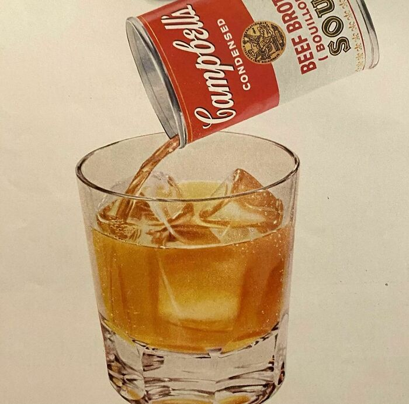

Soup On The Rocks

A classic and comforting soup served with a twist, inspired by a nostalgic Campbell’s Soup advertisement from 1956.
Perfect for warming up on chilly days or as a comforting starter.
Ingredients
- 1 can (10 1/2 ounces) Campbell’s Condensed Soup (your choice of flavor)
- 1/2 cup milk (optional, for creamier texture)
- Crackers or breadsticks, for serving
Steps
- Heat Campbell’s Condensed Soup in a saucepan over medium heat until hot, stirring occasionally.
- If desired, stir in milk to achieve a creamier consistency.
- Once heated through, carefully pour the soup into a heat-resistant glass or mug.
- Serve immediately with crackers or breadsticks on the side.
Let's go home...